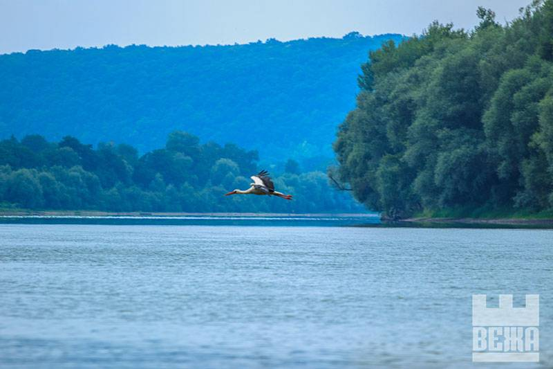
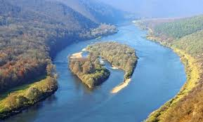
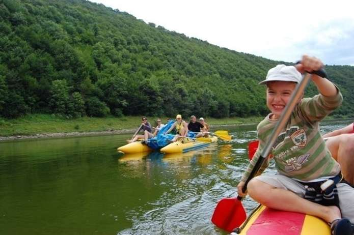
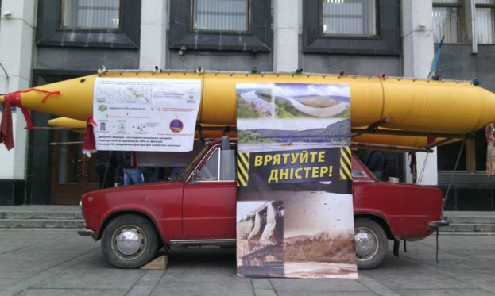

Construction of a cascade of hydroelectric power stations in the upper part of the Dnister
On the Dniester River they plan to build a cascade of six hydroelectric power stations. The project with a magnitude - to spend on it have 16 billion hryvnia: 166 million dollars from public funds and 400 million euros, attracted to international communities. They are still talking about 1.1 billion euros (= 32 billion UAH) of a loan, which has already agreed to be issued by the European Bank for Reconstruction and Development. The planned total capacity of these six hydroelectric plants is 390 MW.
The administrative area will cover three oblasts: Ivano-Frankivsk, Ternopil and Chernivtsi (Ternopil-Frankivsk branch - 5 HPPs, Ternopil-Chernivtsi - one). At the end of last year, the heads of the then state administrations applied to allow local communities to authorize the start of construction. Officials left with the regional councils, and Ivano-Frankivsk deputies immediately said their "no". In Bukovina, the news was taken more or less calmly - the community, apparently, resigned that their Dniester is not like a river, as a source of energy. Instead, in Ternopil on this issue, the spears do not jumble, they hesitate between the incidental (read aloud) economic benefits and the real harm that will be caused to the environment.
Video
Your attitude to the construction of a cascade of hydroelectric power stations?
Latest news
World Nature Fund opposed the construction of a cascade of hydropower plants on the Dniester
World Nature Fund opposed the construction of a cascade of hydropower plants on the Dniester
To stop the construction of a hydroelectric power station on the Dniester, it is necessary to go on the offensive
Villages in two areas will be under water through the construction of hydroelectric power stations on the Dniester.
World Nature Fund opposed the construction of a cascade of hydropower plants on the Dniester
World Nature Fund opposed the construction of a cascade of hydropower plants on the Dniester